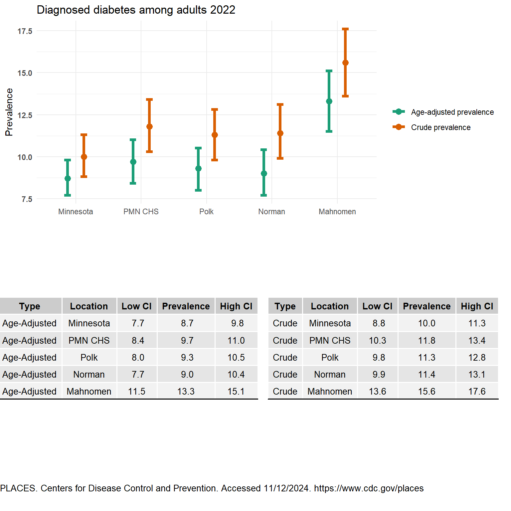
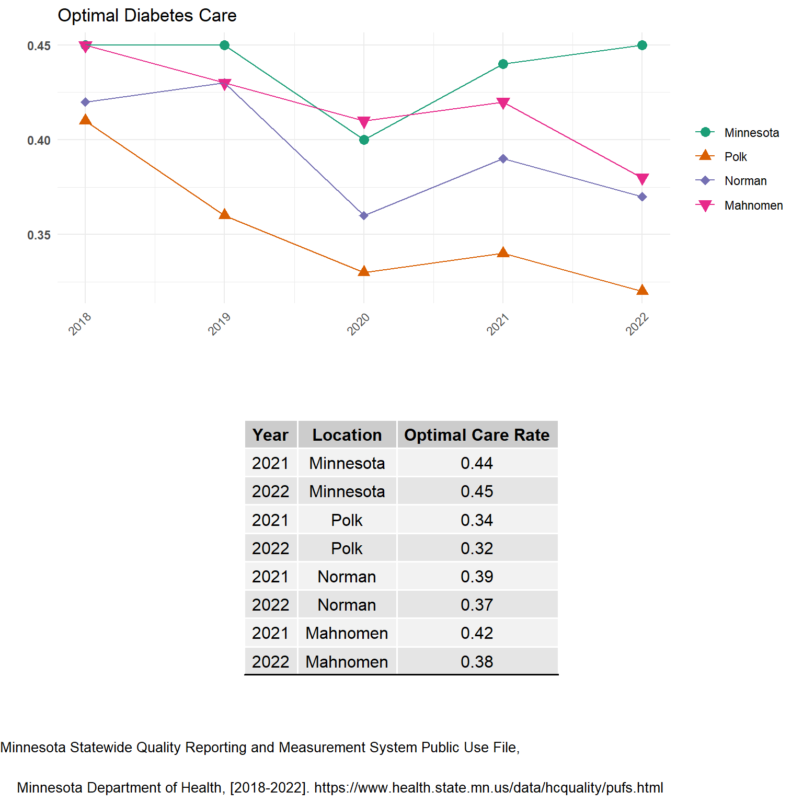
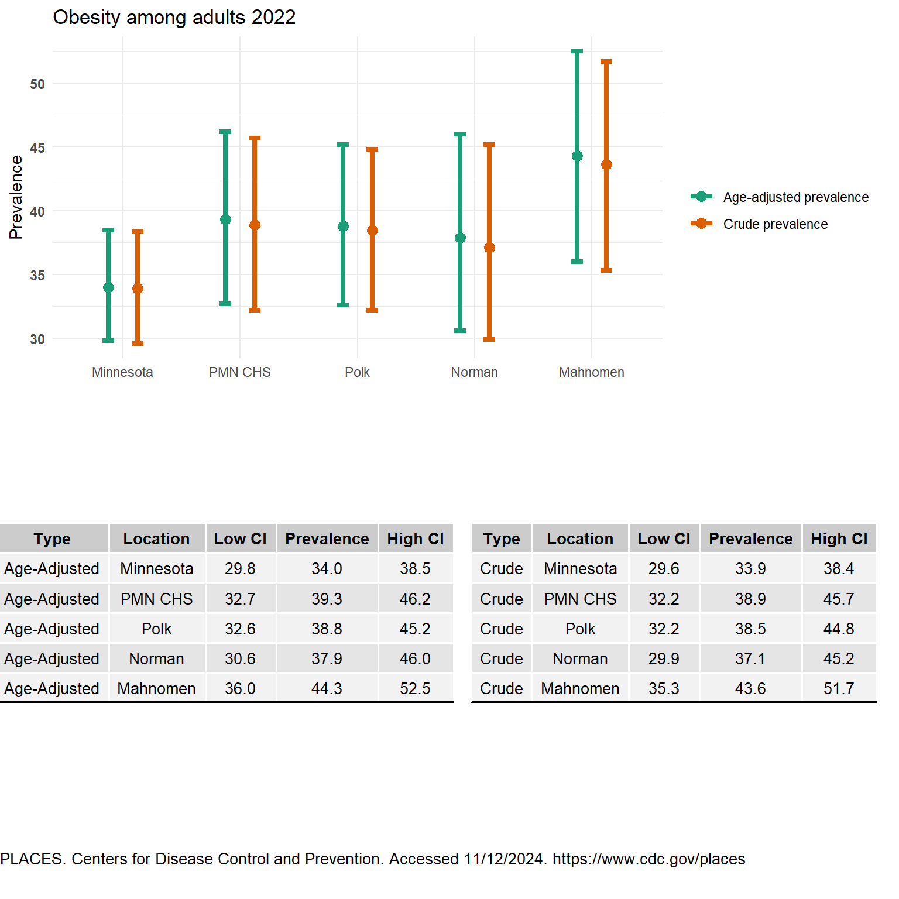
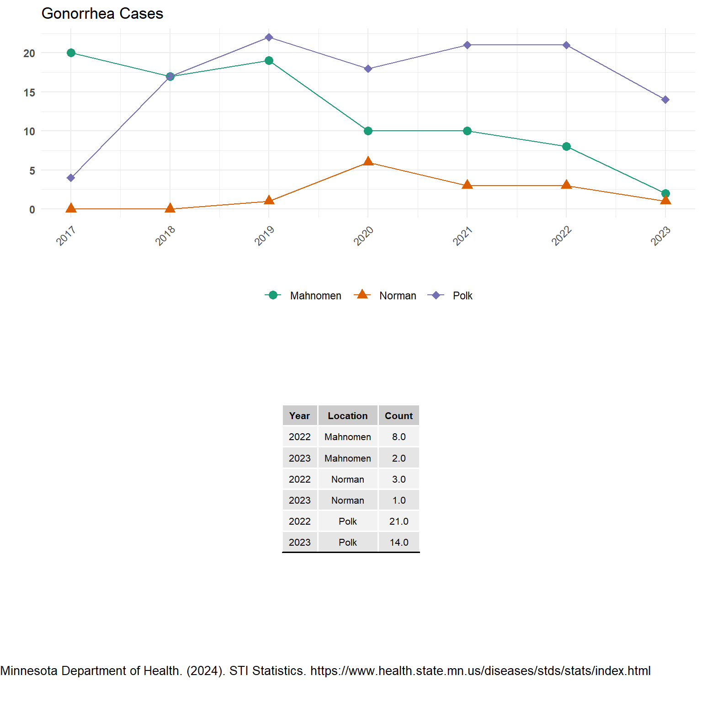

Health Conditions
Addressing chronic health conditions is crucial for improving the overall well-being of our communities. Heart disease, cancer, sexually transmitted infections (STIs) including HIV, obesity, and diabetes are among the most significant health challenges we face today. These conditions not only impact individual health but also place a substantial burden on healthcare systems and society as a whole.
Heart disease and cancer are the leading causes of death in Minnesota. Cancer, with its various forms, continues to affect many lives, highlighting the importance of early detection and treatment. STIs, including HIV, pose serious health risks and require comprehensive education and prevention strategies.
Obesity is a growing concern, contributing to numerous other health issues such as diabetes and heart disease. Diabetes itself is a major public health challenge, with both type 1 and type 2 diabetes requiring effective management to prevent complications.
By focusing on these key health conditions, we can develop targeted interventions and support systems to improve health outcomes and enhance the quality of life for individuals in our communities.
Heart Disease
Heart disease is a health concern that impacts our communities. The age-adjusted number of deaths per 100,000 residents due to heart disease from 2018 to 2022 varies across different locations. Mahnomen County has the highest rate at 196 deaths per 100,000 residents, which is notably higher than the state average for Minnesota at 121 deaths per 100,000 residents. Polk and Norman counties also report elevated rates, with 153 and 160 deaths per 100,000 residents, respectively.
| Location | Heart Disease |
|---|---|
| Minnesota | 121 |
| Polk | 153 |
| Norman | 160 |
| Mahnomen | 196 |
NORC at the University of Chicago (2024b)
Cancer
Cancer remains a significant public health challenge, affecting many individuals and communities. As of January 1, 2021, an estimated 316,110 Minnesota residents were living with a history of malignant cancer, representing 5.5% of the state’s population. In our local counties, the prevalence is even higher. Polk County has 1,880 individuals (6.1% of the population) living with a history of cancer, Norman County has 470 individuals (7.3%), and Mahnomen County has 370 individuals (6.9%).
These statistics highlight the widespread impact of cancer and the importance of ongoing support and resources for those affected. Additionally, the age-adjusted rates of specific cancers, such as lung and breast cancer, provide further insight into the burden of this disease. For example, Mahnomen County has the highest age-adjusted rate of lung cancer at 62.7 per 100,000 people, while Polk County has the highest rate of breast cancer at 146.3 per 100,000 people.
By understanding the prevalence and impact of cancer in our communities, we can better tailor our efforts to support those affected and work towards reducing the incidence and mortality associated with this disease.
| Location | Number of Persons Living with a History of of Cancer |
Percent of Population Living with a History of Cancer |
|---|---|---|
| Minnesota | 3,16,110 | 5.5% |
| Polk | 1,880 | 6.1% |
| Norman | 470 | 7.3% |
| Mahnomen | 370 | 6.9% |
Minnesota Department of Health (2024)
| Location | Lung Cancer | Breast Cancer |
|---|---|---|
| Minnesota | 52 | 136 |
| Polk | 57.8 | 146.3 |
| Norman | 49.3 | 109.2 |
| Mahnomen | 62.7 | 133.7 |
Minnesota Department of Health (2023)
Dementia
Dementia is a growing public health concern, particularly among older adults. In Minnesota, 11.9% of beneficiaries are living with dementia. This prevalence is slightly higher in Polk and Norman counties, where 12% of beneficiaries are affected. Mahnomen County has a slightly lower rate at 11.5%. These percentages highlight the impact of dementia on our communities. Addressing the needs of individuals with dementia and their caregivers is crucial for improving quality of life and providing adequate support. By focusing on early detection, effective management, and community resources, we can better support those affected by dementia and work towards reducing its burden.
| Location | Percent of Beneficiaries with Dementia |
|---|---|
| Minnesota | 11.9% |
| Polk | 12% |
| Norman | 12% |
| Mahnomen | 11.5% |
NORC at the University of Chicago (2024a)
Diabetes
The age-adjusted prevalence for diabetes is similar between Minnesota, Norman, and Polk. However, Mahnomen does have a higher prevalence of diabetes than Polk County and Norman County. The hope would be that all three counties would be doing reasonably well in the optimal diabetic care. However, we are lower compared to Minnesota.
Optimal diabetic care consists of controlling ones blood pressure (less than 140/90 mmHg), maintaining ones HbA1c ( < 8.0 mg/dL), taking a statin if its tollorated, a non-tobacco user, and being on a daily aspirin if the patient has ischemic vascular disease Minnesota Department of Health (2018-2022). This care is specifically targeted at patients aged 18-75.
Similarly, the pattern observed in obesity among adults mirror those seen in diabetes prevalence. Mahnomen County, in particular, has a higher age-adjusted prevalence of no leisure-time physical activity and obesity compared to the rest of the group.

Obesity
Examining obesity is crucial because it is a major risk factor for numerous chronic diseases, including heart disease, diabetes, and certain cancers. Understanding the prevalence of obesity helps in developing targeted interventions to promote healthier lifestyles and prevent these conditions. Additionally, addressing obesity can improve overall quality of life and reduce healthcare costs for individuals and communities.

Influenza
Several influenza surveillance methods are used across the state of Minnesota. Data is summarized by influenza season (October – April), rather than calendar year. Please refer to page 2 Hospital Influenza Cases by Season and page 3 Deaths associated with influenza by season in this MDD Summery report.
STI/HIV
As we continue to address these behavioral factors, it’s also crucial to focus on sexually transmitted infections (STIs) and HIV. These public health concerns require our attention to ensure effective prevention, testing, and treatment strategies. Let’s now examine the data on STIs and HIV in our counties to understand their impact and how we can improve health outcomes in this area.
Chlamydia, Gonorrhea, and Syphilis data in this report should only be compared to the county it pertains to since these are counts. What is also difficult with counts even when looking at the impact internally, is counts don’t factor in population growth or decline. However, counts do provide us with insight of the actual impact for if someone gets an STI or HIV. Polk County experienced an increase in Chlamydia cases from 2022 to 2023. Norman and Mahnomen nearly had no cases of gonorrhea in 2023. Syphilis, we see a decline in Polk County and an increase in Mahnomen County.




Asthma
Asthma is a chronic disease of the airways that makes breathing difficult. Asthma causes inflammation or swelling, and a narrowing of the airways making it more difficult to breathe. Irritated cells in the airways make more mucus than usual narrowing the tiny airways. Mucus is a normally a protective, sticky liquid that helps shield your lungs from irritants like dust, bacteria and smoke.
During normal breathing, air flows freely in and out of the lungs. However, during an asthma attack or episode, swelling of the airway’s lining increases, muscles surrounding the airways tighten, and thick mucus clogs the tiny airways making it difficult to breathe. Asthma affects people of all ages and while it can start in adulthood, it most often starts during childhood.
Children, teens, and adults now spend up to 90% of their time indoors, and at least 50% of that time is spent in their home. Because of the large amount of time spent indoors, the home environment is an important focus for reducing exposures to triggers of asthma. Triggers of asthma found in the home include allergens such as pet dander, mold, or pests as well as irritants such as scented cleaning products and second hand smoke. Minnesota Department of Health (2022)
| Location | Age-Adjusted |
|---|---|
| Minnesota | 29.8 |
| Polk | 21.3 |
| Norman | 14.0 |
| Mahnonmen | 42.6 |
Minnesota Department of Health (2019-2021)